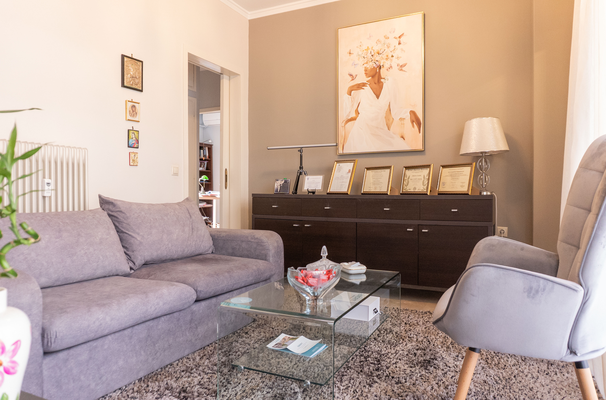
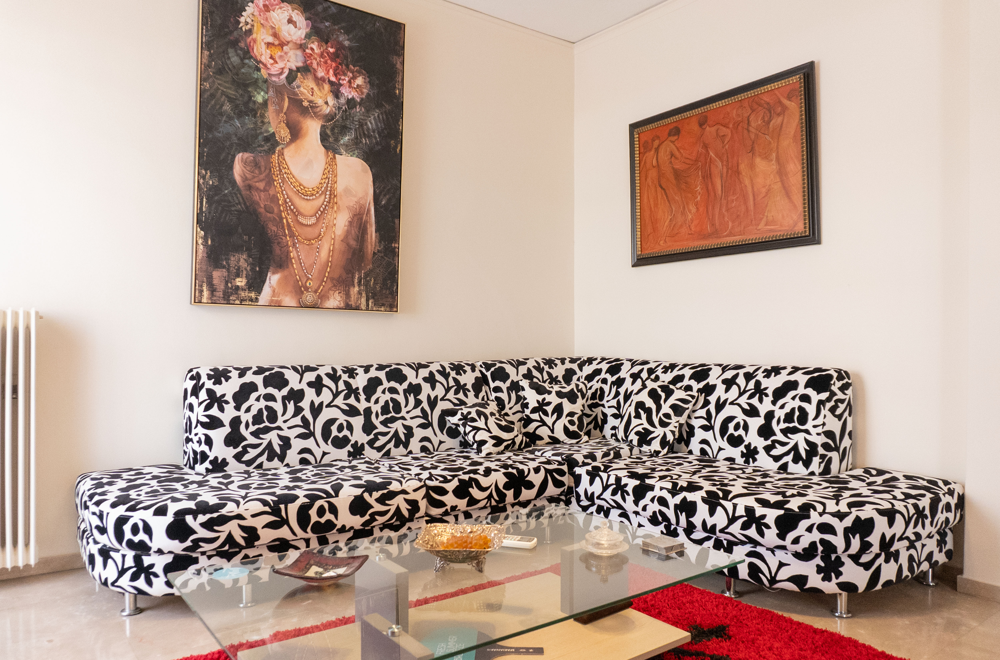
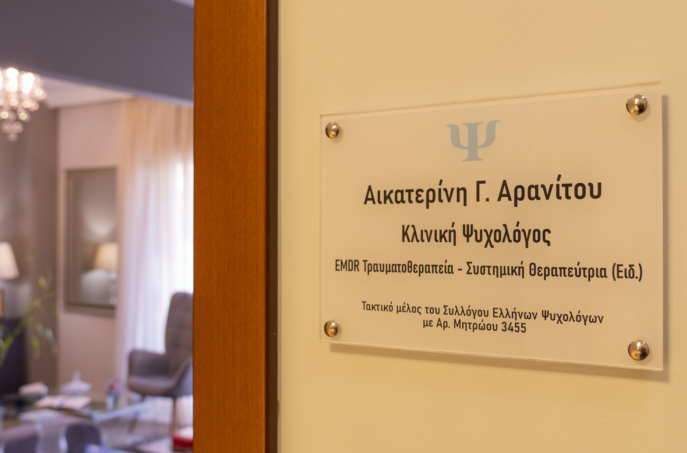
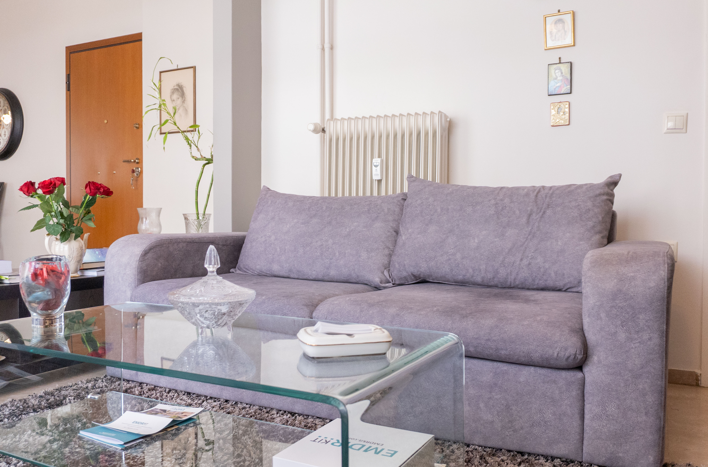
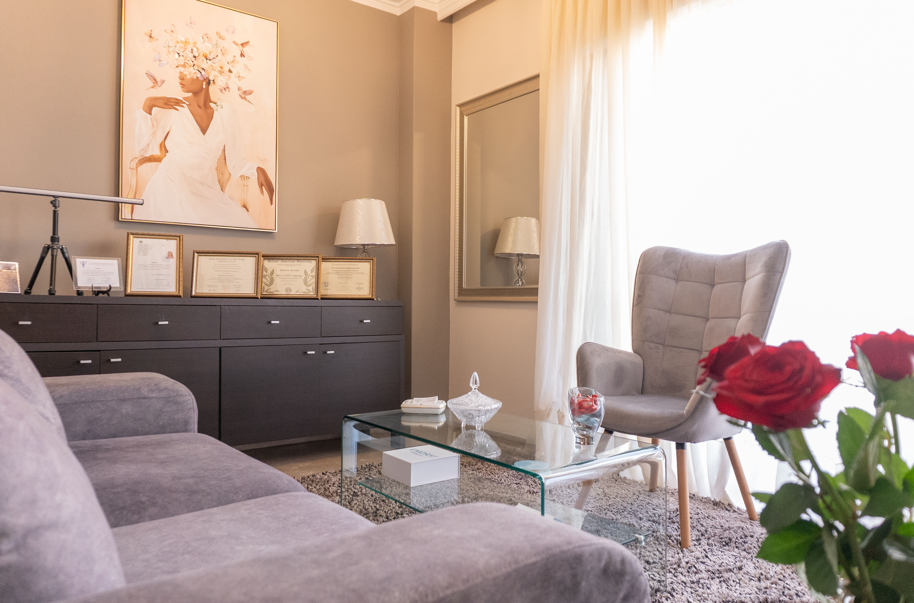
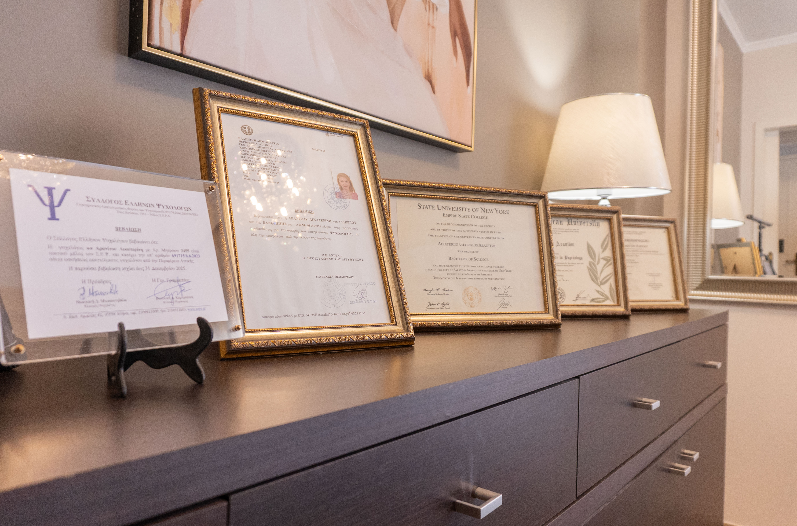

Το μεγαλύτερο μυστικό της ζωής είναι πως δεν υπάρχουν μυστικά.
Ό,τι κι αν ονειρεύεσαι να πετύχεις, μπορείς να το καταφέρεις, αρκεί να είσαι διατεθειμένος να εργαστείς με επιμονή και αφοσίωση. Ένα επιστημονικά δομημένο πλαίσιο για να αποδομήσετε το χάος και να επαναπροσδιορίσετε την πραγματικότητά σας.
Μια κλινική ταυτότητα από την πρώτη γραμμή.

Η Αρανίτου Κατερίνα είναι Ψυχολόγος με μετεκπαίδευση στην Κλινική Ψυχικής Υγείας και διατηρεί το ιδιωτικό γραφείο της στο Χολαργό. Έχει άδεια ασκήσεως επαγγέλματος, με αριθμό 691715, είναι Τακτικό μέλος του Συλλόγου Ελλήνων Ψυχολόγων (ΣΕΨ) με ΑΜ: 3455, Τακτικό μέλος στην EMDR HELLAS & Μέλος της American Psychological Association (APA).
Ξεκίνησε την ακαδημαϊκή πορεία αποκτώντας πτυχίο Ψυχολογίας, από το κρατικό Πανεπιστήμιο της Νέας Υόρκης (State University of New York – Empire State University). Είναι κάτοχος Μεταπτυχιακού διπλώματος (MSc) στην Ψυχολογία με ειδίκευση στην Κλινική Ψυχικής Υγείας, από το Ηellenic American University, New Hampshire – USA και με εξειδίκευση στη Γνωστική Συμπεριφορική Θεραπεία (CBT).
Το τριετές Μεταπτυχιακό Πρόγραμμα στην Ψυχολογία (MSPsy) παρείχε ολοκληρωμένη εκπαίδευση και κατάρτιση στην τεκμηριωμένη (evidence-based) γνωσιακή συμπεριφοριστική προσέγγιση στη συμβουλευτική και την ψυχοθεραπεία.
Είναι εκπαιδευμένη στη Θεραπεία Τραύματος με τη μέθοδο EMDR από την TAC HELLAS.
Επιπλέον, ειδικεύεται μέσω τετραετούς προγράμματος εκπαίδευσης στην Συστημική ψυχοθεραπεία, στο Εργαστήριο Διερεύνησης Ανθρωπίνων Σχέσεων, από τον Σεπτέμβριο 2024.
Στο πλαίσιο της μετεκπαίδευσης της στην Κλινική Ψυχικής Υγείας πραγματοποίησε κλινική πρακτική άσκηση και συμβουλευτική, υπό εποπτεία στη Ψυχιατρική Κλινική του 414 Στρατιωτικού Νοσοκομείου Ειδικών Νοσημάτων, από τον Ιούλιο 2021 έως τον Ιούλιο 2023.
Επίσης, κατά τη διάρκεια των βασικών σπουδών της στην Ψυχολογία, πραγματοποίησε πρακτική άσκηση στο Διακλαδικό Κέντρο Ψυχικής Υγείας, από το 2018 έως 2019.
Έχει συμμετάσχει σε αρκετά επιστημονικά συνέδρια, συγκεκριμένα, στο 63th Annual European Branch of the American Counseling Association (EB-ACA) Conference, που διεξήχθη στις 21-22 Οκτωβρίου 2022, βραβεύτηκε για την έρευνα που έχει διεξάγει στα πλαίσια του μεταπτυχιακού της, με τίτλο "Ψυχική Ανθεκτικότητα ως Προστατευτικός Παράγοντας στις Ψυχιατρικές Διαταραχές κατά τη διάρκεια της στρατιωτικής θητείας".
Επίσης, συμμετείχε ως ομιλήτρια στο 34ο Πανελλήνιο Συνέδριο Ψυχιατρικής τον Μάιο 2026, με θέμα «Ψυχική Ανθεκτικότητα, Συμπτωματολογία και Βιοδείκτες σε Άνδρες Νεοσύλλεκτους – Διερευνητική Μελέτη στις Ένοπλες Δυνάμεις».
Επίσης, συμμετείχε ως ομιλήτρια για την Τεχνητή Νοημοσύνη στο χώρο της Ψυχικής Υγείας - τίτλος "Global Perspectives on Ethical Artificial Intelligence in Mental Health Care: Navigating the Ethical and Social Challenges", τον Οκτώβριο 2024, στο 65th Annual European Branch of the American Counseling Association (EB-ACA) Conference, στη Νυρεμβέργη Γερμανία.
Τέλος, συμμετείχε στο 6th ICMM Pan European Regional Congress on Military Medicine, τον Απρίλιο 2024 και παρακολούθησε αρκετά Διεπιστημονικά Συνέδρια «Εγκέφαλος και Νους» το 2022, το 2023 & το 2024, αντίστοιχα.
Κατά τη διάρκεια των εκπαιδεύσεων της στον τομέα της ψυχικής υγείας, ήταν στέλεχος των Ενόπλων Δυνάμεων με πολυετή εμπειρία, η οποία της προσέφερε βαθιά κατανόηση της ανθρώπινης συμπεριφοράς, του εργασιακού στρες και της ψυχικής ανθεκτικότητας—στοιχεία που εμπλουτίζουν την θεραπευτική της προσέγγιση.
Ένας «φροντισμένος» εαυτός, μέσω της ψυχοθεραπείας, θα φροντίσει να κάνει υγιείς σχέσεις σε προσωπικό, ερωτικό, επαγγελματικό και κοινωνικό επίπεδο.
Στοχευμένες θεραπευτικές διαδρομές.
Η βία σε κάθε μορφή της, είτε λεκτική, είτε σωματική, ή ψυχολογική προκαλεί τραύματα σωματικά και ψυχικά. Δεν χρειάζεται να είναι κάποιος στρατιώτης στον πόλεμο, ο οποίος όταν επαναπατρίζεται, έχει εκρήξεις θυμού ή απουσία συναισθήματος, λόγω ψυχικού τραύματος. Για πολλούς ανθρώπους ο πόλεμος ξεκινάει από το σπίτι τους. Ψυχικό τραύμα αφορά, για παράδειγμα, άτομα που έχουν υπάρξει θύματα σεξουαλικής κακοποίησης στην παιδική τους ηλικία, είτε είχαν γίνει μάρτυρες ξυλοδαρμού του γονέα τους, είτε έχουν υποστεί σωματική ή λεκτική βία από τον/την σύντροφό τους ή ακόμα και τον οικονομικό και επαγγελματικό αποκλεισμό. Άτομα που είχαν τροχαίο ατύχημα ή έχουν διαγνωστεί με κάποια σοβαρή ασθένεια, αντιμετώπισαν τρομοκρατική ενέργεια ή φυσική καταστροφή.
Από το αρχαιοελληνικό ρήμα «τιτρώσκω» που σημαίνει «πληγώνω» προέρχεται η λέξη «τραύμα», η οποία χρησιμοποιήθηκε στους στρατιώτες που είχαν υποστεί πληγές ή τραυματισμό που προκλήθηκαν από τη διάτρηση του θώρακος. Η ιατρική έννοια του τραύματος είναι «η ξαφνική ή βίαιη λύση της συνέχειας των ιστών του δέρματος και συνήθως αιμορραγία» (Μπαμπινιώτης, 2008).
Ο ψυχικός τραυματισμός εκδηλώνεται όταν κάποιο στρεσογόνο γεγονός βιωθεί και προκαλέσει «ρήγμα» στο ψυχισμό ενός ατόμου. Δηλαδή το άτομο όσες ικανότητες και άμυνες επιστρατεύσει δεν επαρκούν για να το ξεπεράσει. Ο τραυματισμός εγγράφεται ανεξίτηλα στην μνήμη, καθώς και στο σώμα χωρίς να είναι σε θέση το άτομο να μπορεί να το εξαλείψει. Με αποτέλεσμα ενοχλητικές αναμνήσεις μπορούν να αποθηκευτούν στον εγκέφαλο μεμονωμένα και παραμένουν κλειδωμένα στο νευρικό σύστημα με τις αρχικές εικόνες, τους ήχους, τις σκέψεις και τα συναισθήματα που εμπλέκονται.
Όλοι οι άνθρωποι διαθέτουμε ένα φυσικό σύστημα «αυτοΐασης» που έχει εξελιχθεί και μας επιτρέπει να επανορθώνουμε τις αντιδράσεις μας σε ενοχλητικά γεγονότα από μια αρχική δυσλειτουργική κατάσταση ανισορροπίας σε μια προσαρμοστική κατάσταση επίλυσης. Υπό κανονικές συνθήκες, το μυαλό έχει τη φυσική ικανότητα να επεξεργάζεται ενοχλητικές στρεσογόνες εμπειρίες χωρίς θεραπευτική παρέμβαση, για παράδειγμα, μιλώντας σε ένα φίλο μας ή κατά τη διάρκεια του ύπνου μας.
Κάποιοι τα καταφέρνουν, για τους περισσότερους η ανάμνηση ενός δυσάρεστου γεγονότος κάποια στιγμή ξεθωριάζει ή μεταμορφώνεται σε κάτι λιγότερο δυσάρεστο. Κάποιοι όμως παραμένουν καθηλωμένοι στο περιστατικό του τραυματισμού αδυνατώντας να το «μεταβολίσουν» ψυχικά. Άλλα άτομα κατακερματίζεται το «εγώ» τους και οδηγούνται στη ψυχική αποδιοργάνωση, καταφεύγοντας στη χρήση αλκοόλ ή ουσιών στην προσπάθεια να καταστείλουν την εσωτερική τους ένταση και τον ψυχικό πόνο.
Η Ψυχοθεραπεία EMDR είναι μια σχετικά βραχύχρονη θεραπεία και καθοδηγείται από το μοντέλο AIP (Αdaptive Information Processing), σύμφωνα με το οποίο το υψηλό στρες και οι αντίξοες ή τραυματικές εμπειρίες αποθηκεύονται στο μυαλό σε μια «ακατέργαστη» μορφή, οι οποίες συμβάλλουν σε δυσφορικά συμπτώματα.
Η παρέμβαση με τη θεραπεία EMDR είναι η μετατροπή της δυσλειτουργικής αφομοίωσης μιας τραυματικής εμπειρίας σε λειτουργική, μέσω αμφίπλευρης διέγερσης (BLS), που περιλαμβάνει ρυθμικές εναλλασσόμενες κινήσεις ή ήχους που ενεργοποιούν τα δύο ημισφαίρια του εγκεφάλου. Σκοπός της είναι να βοηθήσει τον εγκέφαλο να επεξεργαστεί τραυματικές αναμνήσεις, καθιστώντας τες λιγότερο ενοχλητικές. Η BLS μπορεί να πραγματοποιηθεί μέσω διεστιακής κίνησης των ματιών, ακουστικών τόνων ή απτικής διέγερσης, όπως το χτύπημα στα γόνατα ή στα χέρια. Βοηθά στην επεξεργασία τραυματικών αναμνήσεων για την ανακούφιση από ψυχική και σωματική δυσφορία, αξιοποιώντας το φυσικό σύστημα αυτοΐασης του εγκεφάλου.
Τρόποι εφαρμογής της αμφίπλευρης διέγερσης (BLS):
- Οπτική: Ο θεραπευτής κινεί το δάχτυλό του ή μια μπάρα φωτός μπρος-πίσω, με τα μάτια του ασθενούς να ακολουθούν την κίνηση. Αυτή η μέθοδος είναι παρόμοια με τις κινήσεις των ματιών κατά τη διάρκεια του ύπνου REM, που είναι σημαντικό στάδιο για την επεξεργασία μνημών.
- Ακουστική: Εναλλάσσονται ακουστικοί τόνοι ή ήχοι στα αριστερά και δεξιά αυτιά του ασθενούς μέσω ακουστικών.
- Απτική: Γίνονται διαδοχικά χτυπήματα σε διάφορα σημεία του σώματος, όπως τα γόνατα ή τα χέρια (Butterfly Hug - "αγκαλιά πεταλούδας").
Όταν είμαστε «κατακλυσμένοι από τραυματικές εμπειρίες», ο εγκέφαλός μας χάνει την ικανότητα να διατηρεί την νευρωνική ολοκλήρωση σε όλα τα δίκτυα που είναι αφιερωμένα στη συμπεριφορά, το συναίσθημα, την αίσθηση και τη συνειδητή επίγνωση.
Όταν οι αναμνήσεις αποθηκεύονται σε αισθητηριακά και συναισθηματικά δίκτυα αλλά αποσυνδέονται από εκείνα που οργανώνουν το γνωστικό κομμάτι, τη γνώση και την προοπτική, γινόμαστε ευάλωτοι σε εισβολές προηγούμενων εμπειριών που ενεργοποιούνται από περιβαλλοντικά και εσωτερικά ερεθίσματα.
Στη διαδικασία της ψυχοθεραπείας, προσπαθούμε να επανενσωματώσουμε αυτά τα αποσυνδεδεμένα δίκτυα επεξεργάζοντας συνειδητά τραυματικές αναμνήσεις. Αυτή η επανένταξη, με τη σειρά της, επιτρέπει στα δίκτυα συνειδητής φλοιώδους επεξεργασίας να αναπτύξουν την ικανότητα να αναστέλλουν και να ελέγχουν παρελθούσες «τραυματικές αναμνήσεις».
ΒΙΒΛΙΟΓΡΑΦΙΑ:
Shapiro, F. (2017). Eye movement desensitization and reprocessing (EMDR) therapy: Basic principles, protocols, and procedures. Guilford Publications.
Van der Kolk, B. (2014). The body keeps the score: Brain, mind, and body in the healing of trauma. New York, 3.
Οι σύγχρονες επαγγελματικές απαιτήσεις, οι αυξημένες ευθύνες και οι γρήγοροι ρυθμοί εργασίας μπορούν να επηρεάσουν σημαντικά την ψυχική υγεία και την απόδοση των εργαζομένων. Το παρατεταμένο άγχος συχνά οδηγεί σε σωματική και ψυχική εξάντληση, μειωμένη συγκέντρωση, επαγγελματική κόπωση (burnout) και δυσκολίες στις εργασιακές σχέσεις.
Ως ψυχολόγος με πολυετή εμπειρία στις Ένοπλες Δυνάμεις και εξειδίκευση στη Γνωσιακή Συμπεριφορική Ψυχοθεραπεία (CBT), στη Συστημική Θεραπεία και στην EMDR Θεραπεία, υποστηρίζω εργαζόμενους, στελέχη και ομάδες να διαχειρίζονται αποτελεσματικά τις προκλήσεις του εργασιακού περιβάλλοντος. Παράλληλα, η ερευνητική μου ενασχόληση με την ψυχική ανθεκτικότητα στις Ένοπλες Δυνάμεις έχει ενισχύσει την κατανόησή μου για τους παράγοντες που βοηθούν τους ανθρώπους να ανταποκρίνονται σε συνθήκες υψηλής πίεσης.
Μέσα από εξατομικευμένες συνεδρίες ή ομαδικές παρεμβάσεις, οι συμμετέχοντες μαθαίνουν να:
- Αναγνωρίζουν έγκαιρα τα σημάδια του στρες και της επαγγελματικής εξουθένωσης.
- Διαχειρίζονται αποτελεσματικά το άγχος και την ψυχολογική πίεση.
- Θέτουν υγιή προσωπικά και επαγγελματικά όρια.
- Ενισχύουν την ψυχική ανθεκτικότητα και την προσαρμοστικότητά τους.
- Βελτιώνουν την επικοινωνία και τη συνεργασία στον εργασιακό χώρο.
- Αναπτύσσουν δεξιότητες αυτοφροντίδας και ισορροπίας μεταξύ επαγγελματικής και προσωπικής ζωής.
Στόχος είναι η δημιουργία ενός υγιούς εργασιακού περιβάλλοντος, όπου οι άνθρωποι μπορούν να αποδίδουν αποτελεσματικά χωρίς να θυσιάζουν την ψυχική τους ευεξία, διατηρώντας παράλληλα υψηλά επίπεδα ικανοποίησης και ποιότητας ζωής.
Όταν η κατάθλιψη, οι κρίσεις πανικού, οι φοβίες ή οι έντονες διακυμάνσεις της διάθεσης σαμποτάρουν την καθημερινότητά σας, το Συνθετικό - Συστημικό μοντέλο προσφέρει μια διέξοδο. Συνδυάζοντας τη δομή της CBT (για την άμεση αλλαγή των δυσλειτουργικών σκέψεων) με το βάθος της Συστημικής προσέγγισης (που εξετάζει τον ρόλο σας μέσα στην οικογένεια και τις σχέσεις), χτίζουμε μια σταθερή καθημερινότητα, γεμάτη αυτογνωσία και ισορροπία.
Η αρχιτεκτονική της ψυχικής ανθεκτικότητας.
Η Αμερικάνικη Ψυχολογική Εταιρεία (APA, 2015), ορίζει την ανθεκτικότητα ως «τη διαδικασία της προσαρμογής μπροστά στις αντιξοότητες, το τραύμα, την τραγωδία, τις απειλές ή τις σημαντικές πηγές άγχους, όπως οικογενειακές και διαπροσωπικές σχέσεις, σοβαρά προβλήματα υγείας ή προβλήματα στο χώρο της εργασίας και οικονομικές αντιξοότητες».
Η ψυχική ανθεκτικότητα και η ευαλωτότητα θεωρούνται ψυχοβιολογικές καταστάσεις που συνδέονται σαν αλληλένδετοι πόλοι μεταξύ τους: δηλαδή ταυτόχρονα με την τραυματική εμπειρία ενεργοποιείται και ένας υγιής πυρήνας ανθεκτικότητας!
Εργασία, αγάπη & παιχνίδι.
Εργασίαπαραγωγή & ευθύνη
Η εργασία συνεπάγεται παραγωγική προσπάθεια και ευθύνη — ο τομέας όπου εκφράζουμε ποιοι είμαστε και εξελισσόμαστε σε αυτό που θα μπορούσαμε να γίνουμε.
Αγάπησύνδεση & σχέσεις
Η αγάπη περιλαμβάνει τις συνδέσεις και τις σχέσεις μας με τους άλλους ανθρώπους — το πεδίο όπου παλεύουμε με αυτό που υπήρξαμε.
Παιχνίδιαπόλαυση & επαναφόρτιση
Το παιχνίδι περιλαμβάνει δραστηριότητες για απόλαυση, χαλάρωση και επαναφόρτιση. Όσο παραμελημένο, τόσο απαραίτητο.
Η επιδίωξη μόνο ενός τομέα, αποκλείοντας τους άλλους, μπορεί να οδηγήσει σε δυσαρέσκεια· ενώ μια υγιής ενσωμάτωση και των τριών μπορεί να οδηγήσει σε μια ζωή γεμάτη επιτεύγματα και ηρεμία. Αν δυσκολευόμαστε σε οποιονδήποτε από αυτούς τους τομείς, καλό είναι να ζητάμε βοήθεια.
Ένας ασφαλής χώρος στον Χολαργό.
Ένας χώρος σχεδιασμένος για ηρεμία, εχεμύθεια και σταθερότητα — όπου η θεραπευτική σχέση μπορεί να ανθίσει χωρίς βιασύνη.





Πριν την πρώτη συνεδρία.
Ναι. Όλες οι συνεδρίες είναι απόρρητες, βάσει του άρθρου 9 του νόμου 991/79. Η εχεμύθεια αποτελεί θεμέλιο της θεραπευτικής σχέσης.
Βεβαίως. Πέρα από τις δια ζώσης συνεδρίες στο γραφείο στον Χολαργό, πραγματοποιούνται και online συνεδρίες — με το ίδιο πλαίσιο σταθερότητας, πειθαρχίας και ασφάλειας.
Σε ενήλικες.
Λόγω της μετεκπαίδευσής μου στη συστημική ψυχοθεραπεία, αποσυνδέω τη σχέση μας τόσο από την παθολογία (ασθενής) όσο και από την οικονομική συναλλαγή (πελάτης).
Οι συνεδρίες πραγματοποιούνται κατόπιν ραντεβού, Δευτέρα έως Παρασκευή. Μπορείτε να επικοινωνήσετε τηλεφωνικά στο +30 693 745 4374 ή με email στο aranitoukaterina@gmail.com.
Όταν νιώσετε έτοιμοι.
Είμαι εδώ για να βαδίσουμε μαζί, βήμα-βήμα, σε αυτή τη διαδρομή. Κλείστε μια πρώτη συνεδρία — δια ζώσης στον Χολαργό ή online.
Χολαργός, Αθήνα
Κατόπιν ραντεβού
Όλες οι συνεδρίες είναι απόρρητες βάσει του άρθρου 9 του νόμου 991/79.